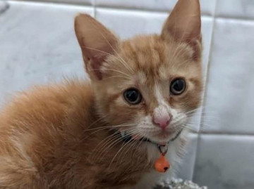

Leia alguns relatos de resgate do nosso abrigo
Rex

Há dois anos, recebemos uma chamada urgente sobre um pequeno cachorrinho abandonado numa rua movimentada. Ao chegar ao local, encontramos um filhote assustado e faminto. Levamos o pequeno Rex para o abrigo, onde lhe demos todos os cuidados veterinários que ele precisava. Mais tarde encontrou um lar amoroso e hoje, este filhote é um cãozinho vibrante e cheio de vida, que conseguiu provar que mesmo os mais vulneráveis podem encontrar um final feliz.
Nala
Num dia de chuva, um dos nossos voluntários encontrou uma gata com os seus bebés resguardada perto de um beco escuro. Resgatamos a família, trazendo-a para o nosso abrigo e proporcionando um ambiente seguro onde pudessem recuperar. Com paciência e cuidados delicados, vimos os filhotes crescerem saudáveis. Já a mãe, hoje apelidada carinhosamente de Nala, acabara por se tornar numa gata afetuosa, mesmo que no início se tenha mostrado bastante desconfiada. Hoje, todos foram adotados e desfrutam de lares onde são verdadeiramente amados.
Velhinho
Há cerca de um ano, rebemos um apelo sensível sobre um cão idoso, abandonado e negligenciado. Ao trazê-lo para o abrigo, descobrimos que além da idade já ter uma idade avançada, já tinha também diversas condições médicas. Com tratamentos adequados e muito carinho, testemunhamos uma transformação incrível e inesperada. Este cão idoso, outrora esquecido, encontrou não só um lugar para chamar de lar, mas também uma família disposta a dar-lhe um segundo começo, uma nova vida.
Brutos e Jack
Perante uma realidade sombria, deparamo-nos com dois pitbulls, chamados Brutus e Jack. Os dois eram vítimas de um passado ligado a uma rede ilegal que organizava lutas entre animais. Ambos, apesar das experiências traumáticas que viveram, mostrava uma lealdade descomunal, uma ligação muito forte entre ambos. Decidimos resgatá-los, levando-os para o abrigo, onde receberam cuidados intensivos para sarar ferimentos físicos e emocionais. Com o passar do tempo, estes dois guerreiros acabaram por se transformar em símbolos vivos de uma superação incrível, provando assim, que mesmo as almas mais feridas podem renascer, e voltar a florescer quando cultivadas com amor e compaixão. has context menu
Sombra
Recebemos uma chamada urgente sobre um gato atropelado à beira da estrada. Ao chegar ao local, encontramos um felino ferido e assustado, a tentar lutar pela vida. Rapidamente, transportamos o gato para o abrigo, onde a nossa equipa veterinária prestou cuidados intensivos. Ao longo das semanas seguintes, testemunhamos uma recuperação incrível. Este gato, foi batizado de Sombra, pois tem a tendência de estar a seguir alguém do abrigo, seja qual for a altura do dia. Ele, acabou por se tornar um exemplo inspirador de resiliência. Hoje, o Sombra desfruta de uma nova vida, superando todas as adversidades com a sua energia e curiosidade, destacando-se pela capacidade de renovação e esperança que tem.